ADVISORY
Starting with Android 15, RxLogger defaults to Secure Mode. with legacy mode deprecated in Android 14 and phased out in Android 15. Consequently, RxLogger will only process intents from third-party apps via the AppOps or Token method, and Secure Backup will replace the legacy backup method as the standard.Overview
RxLogger settings can be configured via the RxLogger user interface or by deploying a configuration file to the device. All settings are stored in the config.json file, which can be exported and deployed across multiple devices within an enterprise. Within the Android Enterprise Work Profile, RxLogger settings vary based on whether the device is operating in the Work Profile or Personal Profile.
Secure Mode enhances Rxlogger security by restricting external access to logs and providing a secure method for broadcasting intents. Only authorized apps can access logs or use the secure method to call RxLogger APIs. This reduces the risk of misuse of potentially sensitive data, ensures access is limited to trusted users and creates a protected environment for deploying configuration files to adjust RxLogger settings.
Deployment
In Secure Mode, any third-party app deploying the configuration file must follow either the AppOps or AppToken approach. The process requires broadcasting the intent before deploying the configuration file, which must be completed within 1 minute of the broadcast. If the deployment is not completed within this timeframe, it will fail.
To broadcast the intent for deploying the configuration file, choose one of the following methods:
AppToken - Use the following command:
com.symbol.rxlogger.intent.action.DEPLOY_CONFIG -e "token" "<token-id>"
Replace <token-id> with the obtained token; see App Token for details.
AppOps - Use the following command:
com.zebra.rxlogger.intent.action.DEPLOY_CONFIG_ZSX
To deploy the configuration file (e.g., config.json) via ADB:
- The intent must be broadcast before file deployment. If the intent is not broadcast, the configuration file will remain unprocessed, and the new settings will not be applied.
*To broadcast the intent via ADB shell - * Use the following command:
com.symbol.rxlogger.intent.action.DEPLOY_CONFIG_SHELL
Logs
Logs collected in Secure Mode are restricted and not accessible to the user. For user access, perform a Backup, which archives the logs in a password-protected .ZIP file to one of the following file paths:
- Internal storage path:
/sdcard/Android/data/com.symbol.rxlogger/RxLogger/secure/log_data/ - External storage path:
/storage/<UUID>/Android/data/com.symbol.rxlogger/RxLogger/secure/log_data/, where<UUID>is the device's unique identifier
RxLogger Settings
To configure general log settings through RxLogger Settings:
From the RxLogger main screen, tap the settings icon at the top right. 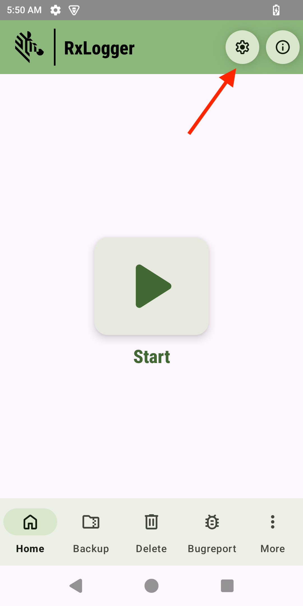
Tap RxLogger Settings. 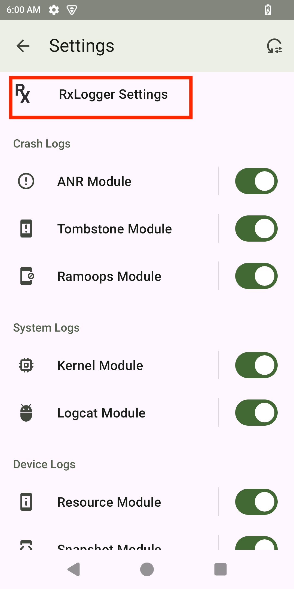
Enable/disable desired settings:
• Notifications - If enabled, the RxLogger icon is displayed in the notification bar while running. This is enabled by default and helps confirm whether RxLogger is running in the background.
• Debug Logs - If enabled, collects debug logs from RxLogger and Diagdaemon, stored in the location specified in the Settings File section. After enabling/disabling, tap the back button, tap Save and reboot the device for the change to take into effect. This setting is disabled by default.
• Internal Storage Logging Only - If enabled, logs are saved to the internal SD card even if an external SD card is inserted. By default, logs are saved to the external SD card if available.
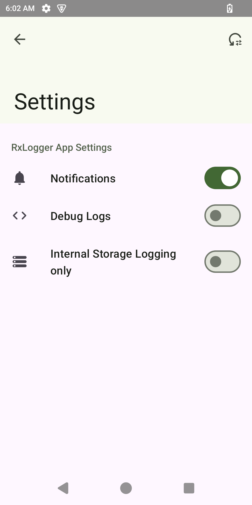
To configure module settings through the GUI:
- Tap the Settings button to display a list of configurable modules loaded by
diagdaemon: 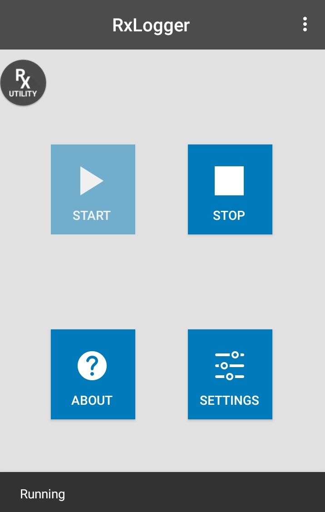 - Tap the module to be edited to display a list of its parameters:

- Edit settings as required. Tap the BACK button when done.
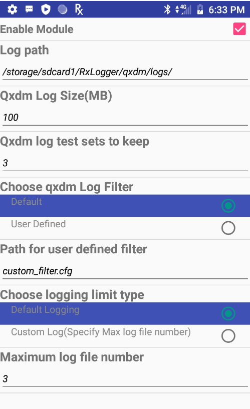
- Repeat Steps 2 and 3 for all desired modules.
- On the modules listing screen, tap SAVE to preserve all changes.
See the Modules page for settings information.
Settings Data Types
Supported data types:
- Integer - Numerical data (0 - 2,147,483,647), such as the number of files to store. For fields that do not allow a value of 0, such as file size, a 1 is substituted.
- String - Text such as file names and storage paths. The UI accepts any alphanumeric input and symbols as permitted by the file system.
- Boolean - True/false information, such as to enable/disable a module, represented as checkboxes.
- List - Select the value from a list of pre-assigned values, represented as radio buttons.
Reset to Default
Reset to Default restores all configurations to their original settings, facilitating recovery from misconfigurations and enabling a fresh start with default values. This option is not available when RxLogger is active to prevent configuration changes from disrupting logging.
To enable Reset to Default (ensure RxLogger is disabled):
- Use one of the two methods to access the feature:
- RxLogger Settings: From the RxLogger main screen, tap Settings. Tap the options menu in the upper right corner and select Reset to default.
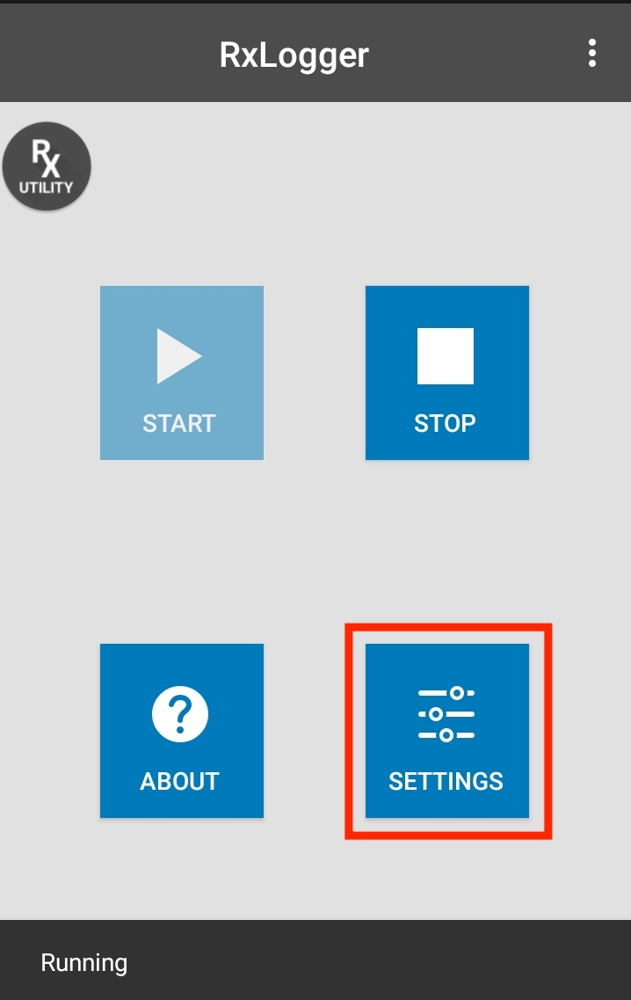 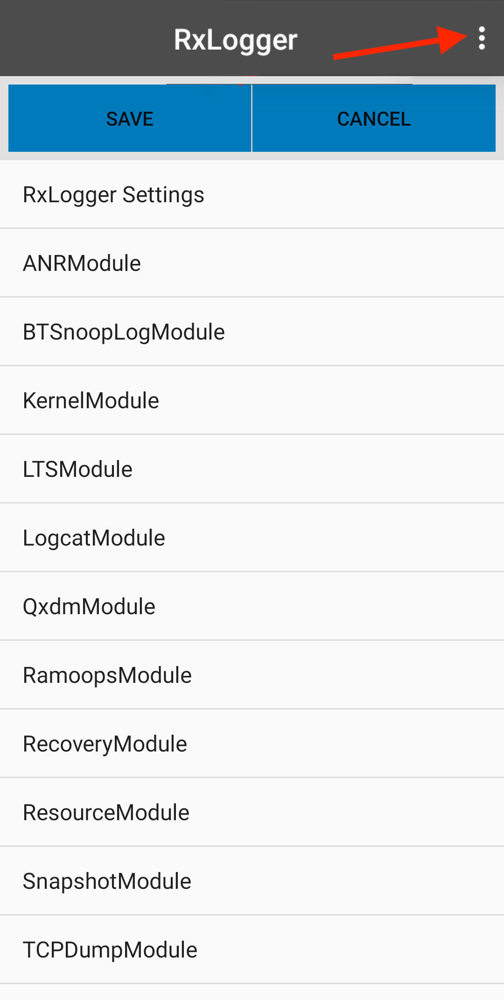 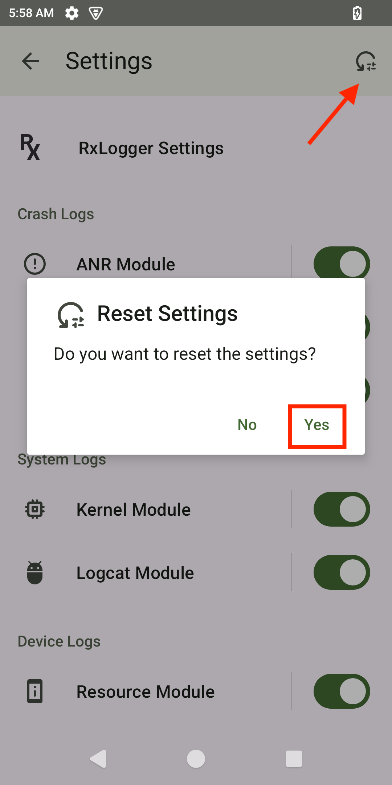 - Instant Logging Settings: Follow instructions to Launch Instant Logging. On the Report an Issue screen, open the options menu in the upper right corner and select Reset to default.

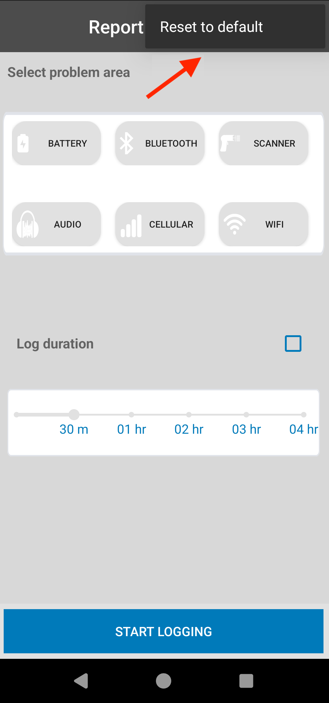
- RxLogger Settings: From the RxLogger main screen, tap Settings. Tap the options menu in the upper right corner and select Reset to default.
- A notification appears indicating success or failure.
Settings File
All RxLogger settings are stored in a file on the device, permitting remote configuration and mass deployment of these files using an enterprise mobile management (EMM) system.
- File name -
config.json - Internal storage:
/sdcard/RxLogger(if the external SD card is not present on the device or Enable internal sdcard only option is activated) - External storage (SD card):
/storage/<UUID>/RxLogger, where <UUID> represents the UUID of the SD card (if the external SD card is present)
RxLogger settings can be configured through the RxLogger user interface (UI) or by editing the settings file.
Note: Zebra recommends using the same config.json file across devices with the same Android platform version. Use of the same file across different Android platform versions may lead to unexpected behavior.
Configure via UI
To configure RxLogger settings via UI:
- Open RxLogger settings.
- Modify the desired configuration settings.
- Save the configuration.
Config.jsonsettings file is created and saved to either internal or external storage. RxLogger restarts to apply the new configuration settings.
This method ensures accuracy and minimizes the risk of errors that can occur when manually editing values in config.json.
Configure via File
To manually configure RxLogger settings:
Locate and retrieve the
config.jsonsettings file from either internal or external storage.Manually update the
config.jsonfile with the required changes, modifying only the values in the "Value" field; all other fields are pre-defined. For parameter values, refer to the Modules section. Zebra recommends viewing the file in JSON format for easier editing.For secure mode, broadcast the intent to trigger RxLogger to restart upon detecting an updated
config.jsonfile. This must be performed prior to file deployment. For instructions, see Secure Mode Deployment.Deploy the
config.jsonfile to the designated path in Step 1.For non-secure mode (legacy mode), broadcast the Refresh Config Intent API to trigger RxLogger to restart and apply the new settings:
com.symbol.dd.intent.action.REFRESH_CONFIG_ACTIONNote: Starting with RxLogger v13.0.12.76, Refresh Config Intent API is discontinued. Instead, RxLogger will automatically refresh to implement changes whenever it detects an updated config file.
Options Menu
The RxLogger options menu, accessed via the three-dot icon at the top right of the main RxLogger screen, offers a variety of functionalities. The available options are described in the following subsections.
| 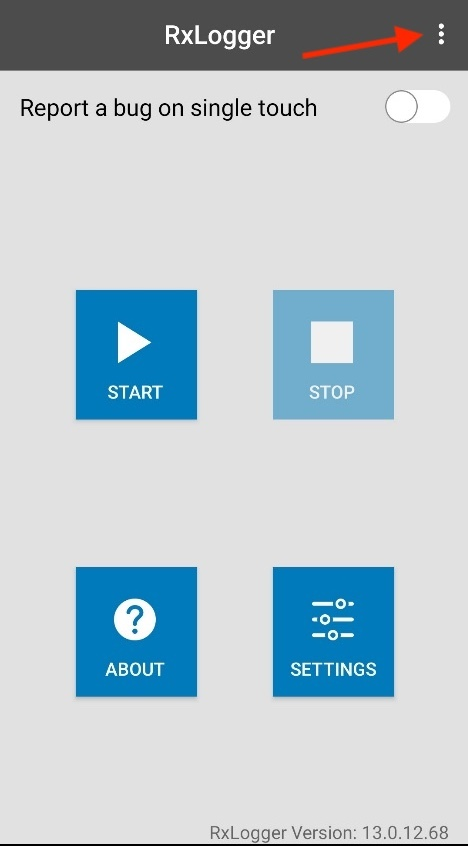 | 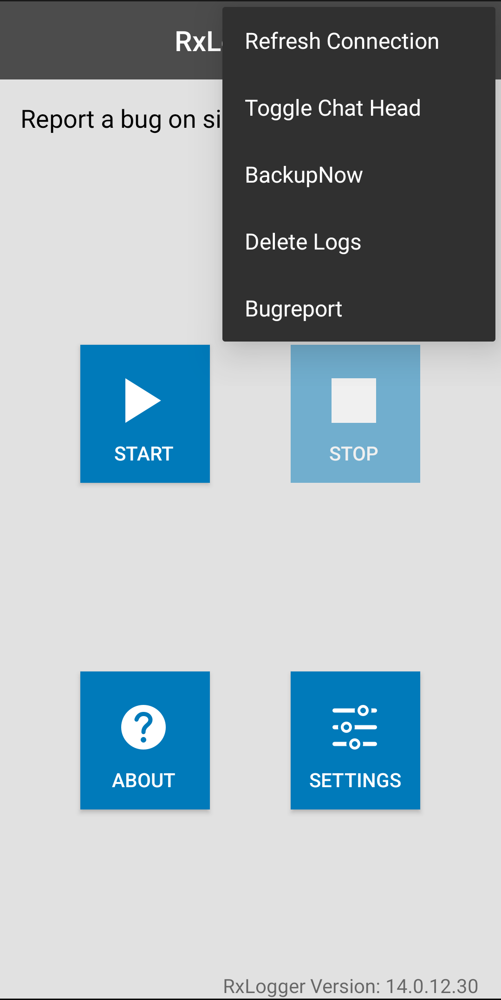 |
RxLogger options menu
Toggle Chat Head
The Toggle Chat Head features, also known as RxLogger Utility, activates a floating icon named RxUtility that can be positioned anywhereon the device screen. Tapping this icon allows real-time viewing of RxLogger logs directly on the device. For more information, see Log Viewer.
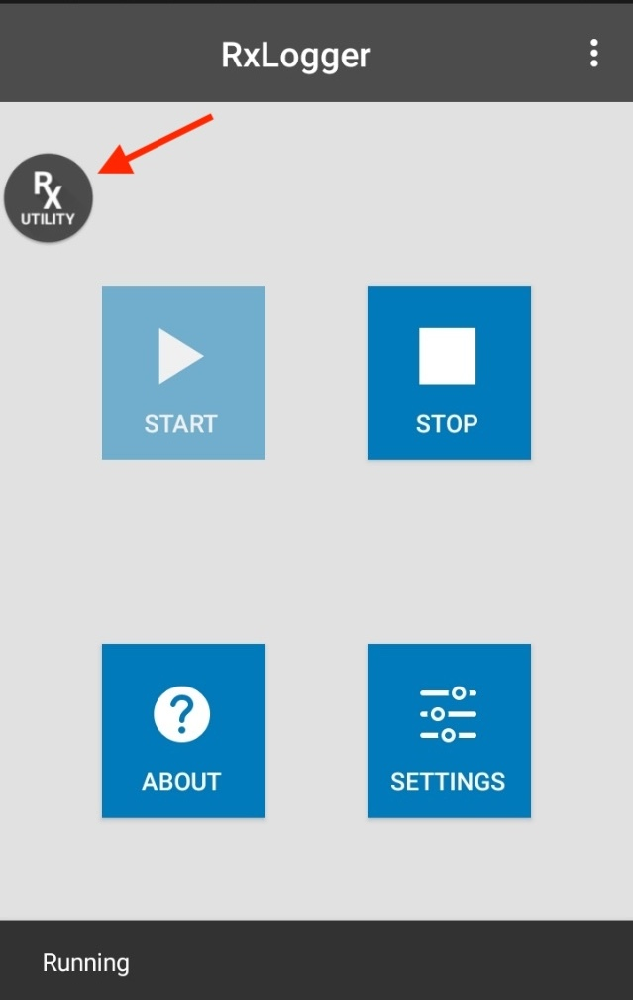
Android Work Profile
Android Enterprise Work Profile for mixed-use company-owned devices enables organizations to enforce corporate policies and restrictions while preserving the privacy of personal data. Formerly known as Corporate-Owned, Personally Enabled (COPE), this allows a single device to serve both professional and personal needs by providing separate work and personal profiles. The Work Profile ensures that corporate data remains secure and separate from personal applications, safeguarding user privacy.
Behavior
RxLogger behavior varies by profile type:
- Work Profile:
- Access: RxLogger is accessible. When enabled, users receive a consent dialog to inform them about data collection.
- Utility: The RxLogger Utility, also known as Toggle Chat Head, is disabled. It normally displays the floating RxLogger icon for quick access to its options.
- APIs: RxLogger intent APIs are disabled.
- Logs: Log path remains the same; see Logs. 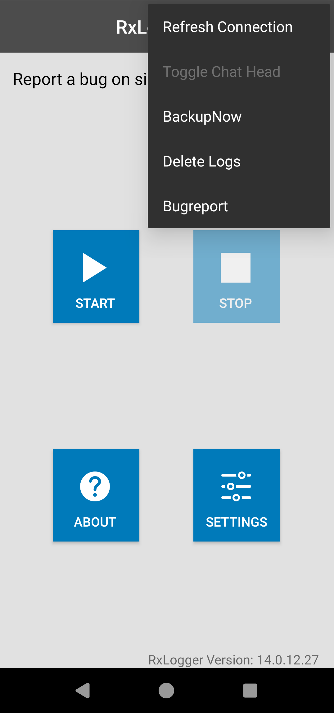 Work Profile - RxLogger is accessible
- Personal Profile:
- Access: RxLogger is fully disabled, with options grayed out and inaccessible.
- APIs: RxLogger intent APIs are disabled. 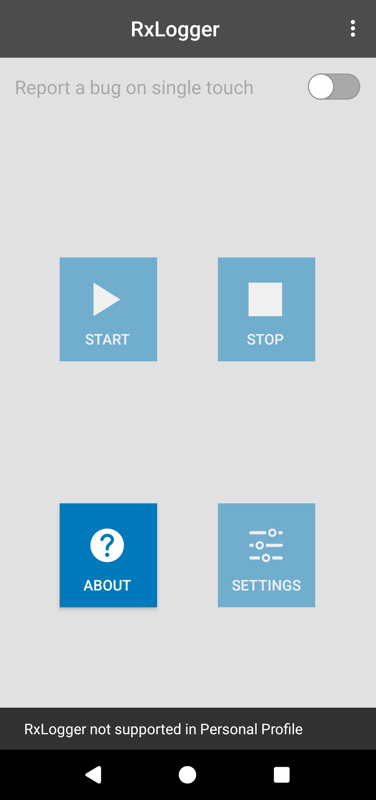 Personal Profile - RxLogger is inaccessible